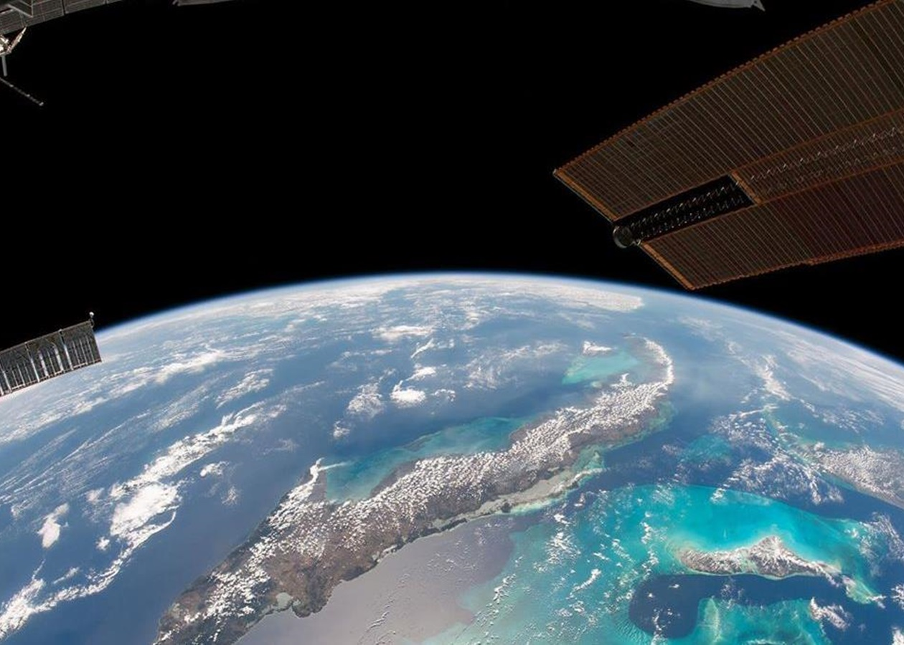
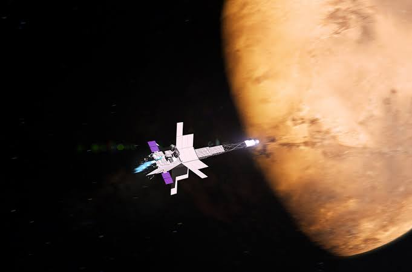

News Releases
Усі новини
BLOG · 2 ХВ ЧИТАННЯ
Підготовка екіпажу до нової місії

BLOG · 3 ХВ ЧИТАННЯ
Вигляд планети Земля з орбіти
BLOG · 5 ХВ ЧИТАННЯ
Сонячне затемнення
BLOG · 6 ХВ ЧИТАННЯ
Астронавт NASA зробив вражаючий знімок Чорного моря з космосу
Інші новини

BLOG · 4 ХВ ЧИТАННЯ
NASA plans to send a nuclear-powered spacecraft to Mars in 2028
BLOG · 5 ХВ ЧИТАННЯ
NASA releases Spinoff 2022 report